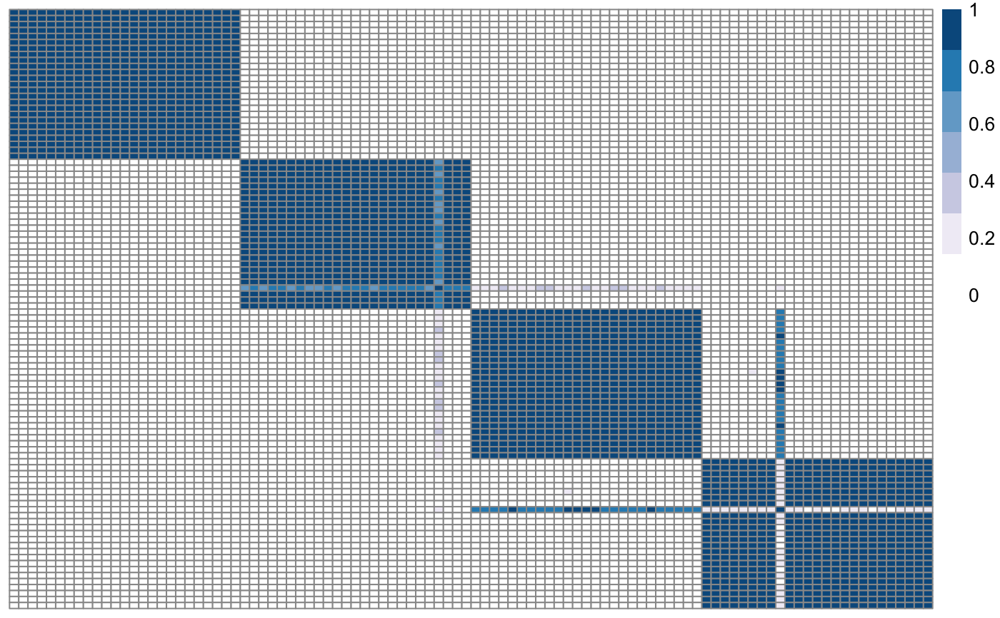

Plot similarity matrix with pheatmap
plotSimilarityMatrix( X, y = NULL, clusLabels = NULL, colX = NULL, colY = NULL, myLegend = NULL, fileName = "posteriorSimilarityMatrix", savePNG = FALSE, semiSupervised = FALSE, showObsNames = FALSE, clr = FALSE, clc = FALSE, plotWidth = 500, plotHeight = 450 )
Arguments
| X | Similarity matrix. |
|---|---|
| y | Vector |
| clusLabels | Cluster labels |
| colX | Colours for the matrix |
| colY | Colours for the response |
| myLegend | Vector of strings with the names of the variables |
| fileName | If |
| savePNG | Boolean: if TRUE, the plot is saved as a png file. Default is FALSE. |
| semiSupervised | Boolean flag: if TRUE, the response is plotted next to the matrix. |
| showObsNames | Boolean. If TRUE, observation names are shown in the plot. Default is FALSE. |
| clr | Boolean. If TRUE, rows are ordered by hierarchical clustering. Default is FALSE. |
| clc | Boolean. If TRUE, columns are ordered by hierarchical clustering. Default is FALSE. |
| plotWidth | Plot width. Default is 500. |
| plotHeight | Plot height. Default is 450. |
Value
No return value. This function plots the similarity matrix either to screen or to a png file.
Examples
# Load one dataset with 100 observations, 2 variables, 4 clusters data <- as.matrix(read.csv(system.file("extdata", "dataset1.csv", package = "klic"), row.names = 1)) # Load cluster labels cluster_labels <- as.matrix(read.csv(system.file("extdata", "cluster_labels.csv", package = "klic"), row.names = 1)) # Compute consensus clustering with K=4 clusters cm <- coca::consensusCluster(data, 4) # Plot consensus (similarity) matrix plotSimilarityMatrix(cm)# Plot consensus (similarity) matrix with response names(cluster_labels) <- as.character(1:100) rownames(cm) <- names(cluster_labels) plotSimilarityMatrix(cm, y = cluster_labels)